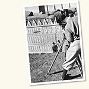

Browse Photographers

- A.V.E.S. Photographic Laboratories of University of Minnesota (1)
- Abbot, Charles Greeley, 1872-1973; Moore, A. F. (1)
- Abel, Anne (1)
- Abel, R. (1)
- Abernathy, J. F. (1)
- Achber Studio (1)
- Ackroyd Photography (1)
- Acland, Laurence (1)
- Acme (51)
- Acme News Pictures (34)
- Acme News Pictures; United Press News (2)
- Acme Photo (3)
- ACRH (1)
- Adams (244)
- Adams and Grace Company (1)
- Adams Studio (1)
- Adler, Gerry (1)
- Advertisers Photographing Company (1)
- Advertising Age (1)
- Aerial Photographic Service (1)
- Aerial Survey-Oriental Institute (2)
- Ahsan, Layla (1)
- Air Force Cambridge Research Laboratories Technologies (1)
- Air Force Photo, Air Photographic and Charting Service (MATS), United States Air Force (2)
- Alburtus, C. T. (7)
- Aldrich, Maurice I. (1)
- Alegre, A. (1)
- Alexander and Associates (1)
- Alexander, Helen (1)
- Alford, Jack H. (1)
- Alleva, Annalisa (1)
- Alley, David (1)
- Allied News-Photo (1)
- Allied Photo Service (2)
- Allmon Photo (1)
- Almburg, Elizabeth (2)
- Altmann, Jeanne; Altmann, Stuart (3)
- American Academy of Benares (4)
- American Airlines (2)
- American Economic Foundation (1)
- American Export Lines (1)
- American Overseas Airlines (1)
- American Passport Studio (1)
- American Seating Company (1)
- Amrein-Graf, Genève (1)
- Andrews, Julia (1)
- Angel, Miguel (1)
- Angelino, Kristin (17)
- Ankers (1)
- Antran (2)
- Aoki, Steve (69)
- Apollo Portrait Company (1)
- APT (12)
- Architectural Camera, Ltd. (87)
- Ardron & Company (2)
- Arendt, Nicole (27)
- Argonne National Laboratory (135)
- Armstrong, Gerry (1)
- Arnold, Charles Dudley, 1844-1927 (65)
- Arnold, Rus (35)
- Aronson, Michael (1)
- Art Institute of Chicago (10)
- Art Photo Associates (1)
- Artotype Company (1)
- Arvidson, Ralph; Chicago Sun-times (1)
- Asher, Whitney (2)
- Associated News (1)
- Associated Press (22)
- Associated Press Feature Service (1)
- Associated Press Photo (10)
- Atlantic Photo Service (1)
- Atwell, Lyman (2)
- Atwell, Lyman; Chicago Herald (1)
- Auerbach (2)
- Aversa, Eric (1)
- Axt, Karen (60)
- Bachrach, Bradford Keyser, 1910-1992 (1)
- Bachrach, Fabian, 1917-2010 (70)
- Bachrach, Louis Fabian, 1881-1963 (9)
- Baker, Louise (1)
- Baker, Tim (23)
- Balch (1)
- Baldwin (11)
- Baldwin & Harvey (8)
- Ballard, James (4)
- Balterman, Lee, 1920-2012 (37)
- Bardon, Emmet (2)
- Barelich, M. J. (2)
- Barge, A. Robert (1)
- Barker, Louise (26)
- Barletta, W. (1)
- Barnak (1)
- Barnard, Edward Emerson, 1857-1923 (389)
- Barnard, Edward Emerson, 1857-1923; Calvert, Mary R., 1884-1974 (1)
- Barnard, Edward Emerson, 1857-1923; Ritchey, George Willis, 1864–1945 (1)
- Barnard, Edward Emerson, 1857-1923; Sullivan (1)
- Barnett, Henry Walter, 1862-1934 (1)
- Barney, A. F. (1)
- Barnie (1)
- Barraud, Herbert Rose, 1845-ca. 1896 (1)
- Barrett, Tony (7)
- Barrish, Dick (1)
- Barth, Anne (4)
- Bartholomew, Mary (9)
- Bass, Leonard (2)
- Bateham, C. S. (2)
- Batistich, Zlatko (16)
- Battey, C. M. (1)
- Bauer, Jerry (2)
- Bautista, Clement (1)
- Bautz, David (1)
- Baxter, Gene; Commercial Photos (1)
- Beach, David (3)
- Beadle, Buell W. (1)
- Beamish, George; Colonial Williamsburg Photograph (1)
- Becker, Herbert Sheldon (3)
- Becraft, Raymond John, 1890-1938 (5)
- Beecher (1)
- Beguelin, Wilfred Scott (8)
- Behre (7)
- Beisel, L. E. (5)
- Bellovin, Melissa (1)
- Bemm, Frederick O. (19)
- Bemm, Frederick O.; Art Institute of Chicago (7)
- Ben-Zvi (8)
- Benedik, Mike (23)
- Benjamin, I. (1)
- Benson, M. A. (4)
- Beresford, George Charles, 1864-1938 (3)
- Berger, Al (12)
- Berger, Alan (8)
- Berko (1)
- Berland, Theodore (11)
- Bernick, Niles (1)
- Bernstein, C. (1)
- Bernstein, Cal; Black Star (9)
- Bethlehem Steel Company, Publications Department (7)
- Biddle, Susan (1)
- Bieber, E. (1)
- Biefeld, Paul Alfred, 1867-1943 (5)
- Bild-Foto-Hutter (1)
- Bild-Photo-Pfeiffer (11)
- Billings Hospital Photographic Department (1)
- Bin, Steven (2)
- Binner (1)
- Black Star (76)
- Blackburn, Francis (1)
- Blackstone Studios (3)
- Blackstone-Shelburne (2)
- Blackstone, New York (1)
- Blaisdell, A. C. (1)
- Blakeslee Photo (3)
- Blakslee, Alpheus (6)
- Blakslee, George C., 1861-1941 (148)
- Blank & Stoller (5)
- Blanke-Harris (1)
- Blanoch, Curt (1)
- Blinn, Rosemary (5)
- Bliss, Charles L. (50)
- Blom, Frans (1)
- Bloom (82)
- Bloom, C. G. (80)
- Bluffton College News Bureau (1)
- Blyth Photography (1)
- Bob McNellis Studios (2)
- Bondareff, Diane (1)
- Bonnell (4)
- Boone, Ray (3)
- Booth, Philippa (2)
- Booz, John (5)
- Borg, Erik (1)
- Borgnes, Phil (6)
- Botts, Beth (2)
- Boucher, Hal (1)
- Bourland, John G. (1)
- Bowen, Jeff (1)
- Bowen, Peking Medical Union (3)
- Bowman (3)
- Bowman, Ronald (1)
- Bowman, Wesley (1)
- Boxer, Baruch (1)
- Boyden Observatory (3)
- Brady, Susie (1)
- Brand (3)
- Brandeis University (1)
- Brands Studio (4)
- Brant, Mike (5)
- Braun, Emma Lucy, 1889-1971 (12)
- Braun, William C. (1)
- Breeden, W. P. (1)
- Breindel, Adam (1)
- Brennan, Elliott (22)
- Brescia, Colleen (1)
- Breslau, Dan (40)
- Bricage, Claude (2)
- Bricklin, Mark (1)
- Brook, John (1)
- Brookhaven National Laboratory (1)
- Brown, Andrew W. (7)
- Brown, Christopher (9)
- Brown, Duncan (3)
- Brown, James Greenlief (15)
- Brundage (2)
- Brundage; Chicago Maroon (1)
- Bud Daley and Ray Burly; Chicago Daily News Weekend (1)
- Buether, Eric (1)
- Bunnygraph Studio (1)
- Burdick, Adam (1)
- Burge, Sarah (2)
- Burgess, Brad (1)
- Burgess, Steven E. (1)
- Burke & Dean (1)
- Burke, F. P. (2)
- Burlingham, William (2)
- Burnham, Sherburne W., 1838-1921 (1)
- Butler, H. (1)
- Bystryn, John (4)
- C. D. Mosher Art Studio (1)
- C. R. Childs Company (1)
- Cabe, Crista (1)
- California Academy of Sciences; Moss Photography (1)
- Callighan, Kathryn (3)
- Callsen, E. (1)
- Calvert Brothers (1)
- Calvert, Mary Ross, 1884-1974 (15)
- Camera Associates (1)
- Camera Craftsmen (1)
- Camera Shop (1)
- Cameramen (1)
- Cameron, George G. (1)
- Campbell, Nancy (1)
- Campbell, Tom (1)
- Candela, David (1)
- Cannon, Annie Jump, 1863-1941 (1)
- Cantero, Lucia (3)
- Cap and Gown (4)
- Capes Photo (617)
- Capes Photo; Kaufmann and Fabry Company (12)
- Capulong, Rhodessa (2)
- Carbutt, John, 1832-1905 (3)
- Carnarvon, George Edward Stanhope Molyneux Herbert, Earl of, 1866-1923 (2)
- Carrington, Kay (5)
- Carson (1)
- Carter, Don (1)
- Carter, Jack (1)
- Cates, Gwen (24)
- Caukühn, W. (1)
- Cezzaroglu, Bahar (3)
- Chamberlain, Charles Joseph, 1863-1943 (96)
- Chamberlain, Ron (1)
- Chamberlin, Rollin Thomas, 1881-1948 (1)
- Chambers (4)
- Chambers Studio (2)
- Champ, George (2)
- Chan, Jimmy (5)
- Chandrasekhar, Subrahmanyan, 1910-1995 (29)
- Chang, Andrew (124)
- Charles D. Fredricks & Company (2)
- Charles Decker and Albert C. Flores (4)
- Chas. Levy Circulating Company (1)
- Chase (5)
- Chase Studios, Ltd. (3)
- Checkman, Louis (2)
- Chemical Research Laboratories Photographic Service (1)
- Chen, James (6)
- Cherneff, John (1)
- Cheung, Leo (4)
- Chi Pix (1)
- Chicago Aerial Industries (16)
- Chicago Aerial Survey Company (30)
- Chicago American (5)
- Chicago Architectural Photographing Company (1073)
- Chicago Association of Commerce and Industry (1)
- Chicago Daily News (55)
- Chicago Daily News; Wide World Photo (1)
- Chicago Daily Times (5)
- Chicago Evening American (1)
- Chicago Herald-American (10)
- Chicago Herald-Examiner (9)
- Chicago Life (2)
- Chicago Maroon (3156)
- Chicago News (1)
- Chicago Park District (3)
- Chicago Photographers (21)
- Chicago Photographers and Photographic Illustrators (6)
- Chicago Sun (88)
- Chicago Sun-Times (69)
- Chicago Theological Seminary (15)
- Chicago Times-Herald (3)
- Chicago Tribune (53)
- Chickering, Elmer, 1857-1915 (3)
- Chidnoff Studio (1)
- Child (1)
- Childs, Charles R. (1)
- Christensen, Jerry K. (3)
- Christian Science Monitor (1)
- Christian Science Publishing Company (1)
- Christophersen, Erling, 1898-1994 (2)
- Chue, Norman (2)
- Chung, Gloria (5)
- Chung, Shirley (1)
- Cihak and Zima (1)
- Ciolfi, Mamsie (3)
- Claflin, Charles R. B., 1817-1897 (1)
- Clark, Arnold (2)
- Clark, E. G. (1)
- Clark, James C. (2)
- Clark, Jessica (6)
- Clarkson Studio (1)
- Cleveland Baptist Association (1)
- Cleveland, Nancy (10)
- Clinics Photographic Department (12)
- Club Photos, The Greenbrier (1)
- Coade, George (3)
- Coant, Chuck (3)
- Coffey (1)
- Cogshall, Wilbur A. (1)
- Cohen, K. (2)
- Cohen, Meredith (13)
- Cohen, Neal (6)
- Colburn, Tim (5)
- College Studio (1)
- Colten Photos (1)
- Commercial Photographic Company (2)
- Conova, Susan (22)
- Consolidated News Service (2)
- Continental Photo Service (1)
- Conway Studios (1)
- Cooper, William Skinner, 1884-1978 (46)
- Cooprider, Joseph Lewis, 1895-1968 (14)
- Copelin Photo (6)
- Corboy (1)
- Corona Studios (14)
- Cory, Virgil; Trans-World Airlines News Bureau (3)
- Cosby, Stanley W. (4)
- Cottingham, Laura (1)
- Coulter, John Wesley, 1893-1967 (6)
- Couper, Norman G. (2)
- Coutte, Ethel (1)
- Covell, Bert G. (2)
- Cowles, Elizabeth Waller, 1873-1963 (29)
- Cowles, Henry Chandler, 1869-1939 (37)
- Cox (11)
- Cox, A. (1)
- Cox, Clare Francis, 1888-1971 (7)
- Cox's (1)
- Coyro, Dan (1)
- Crabtree, Lauren S. (12)
- Crawford, R. J. (1)
- Cribbs, James Elias, 1891-1942 (3)
- Cribbs, William Johnston, 1897-1941 (96)
- Crocket, Will (1)
- Crowe, Marguerite O'Loghlin (5)
- Crunelle, Leonard, 1872-1944 (2)
- Cudworth, Kyle M. (1)
- Cummings, James. S. (1)
- Cummings, Leo (1)
- Cutler, Gina (1)
- Cutner, Carole (1)
- Czaplicki, Mike (6)
- D. H. (5)
- D'Arlene Studio (2)
- Dacasa, Pascal (2)
- Daguerre Studio (32)
- Dahlen, Chris (138)
- Dahlgren, Alfred (1)
- Daily News (56)
- Dandelet (1)
- Daniel, Andrew (1)
- Dannes, P. (1)
- Darlington, Henry T. (4)
- Daryanani, Raj (3)
- Daugherty (1)
- Dave Chare Photography (1)
- Dave Schuessler Photography (1)
- Davey (1)
- David (351)
- David and Alfred Smart Gallery, University of Chicago (4)
- Davis & Sanford (2)
- Davis Photo-Portrait Galleries (1)
- Davis, Ben (2)
- Davis, Myron, 1919-2010 (61)
- Davis, Myron, 1919-2010; Life Magazine (6)
- Dawe, Christopher (57)
- De Luga, Edward (6)
- Deakin Studio (1)
- Deal, Steve (1)
- Dean, Mabel (2)
- Dearborn 8240 Interstate Photo Service (1)
- Decker, Charles (31)
- DeGrane, Lloyd (58)
- DeGrane, Lloyd; Brennan, Elliott (16)
- DeHaven (13)
- DeHaven Studio (9)
- DeHaven, Chicago (1)
- DeLuga, William (3)
- Department of State (1)
- Derechin, Vivian (1)
- Deseret News (1)
- Desser, Edwin (9)
- Deutch, Stephen, 1908-1997 (96)
- Di Gesú, Anthony, died 1993 (1)
- Dickinson College Photographic Service (1)
- Dietman, John (1)
- Dine, Scott (1)
- Dixie Studio (1)
- DixPix (2)
- Donner, Michael (2)
- Dono, Rebecca E. (10)
- Donohue, Val (1)
- Douglas, Dorothy (1)
- Douglass, Andrew Ellicott, 1867-1962 (1)
- Dovydenas, Jonas (1)
- Drea, Robert (1)
- Dreiser, Harry (1)
- Dreiser, Richard (59)
- Dreyfus, Joshua (2)
- Dry, Dan (1)
- Du Bois, The Drake (11)
- Dubose, George (1)
- Dudgeon, Winfield Scott, 1886-1932 (45)
- Dufort, Jeanne (124)
- Dunbar (1)
- Duncan, John Charles, 1882-1967 (5)
- Dunlap, Donna (1)
- Dunlevy, John (84)
- Dyer, C. F. (1)
- Dykinga; Chicago Sun-Times (2)
- Dyrud, Christine (9)
- E. H. Husher & Company (1)
- E.L.R. and G.A.P. (21)
- Ebony Magazine (1)
- Eckfeldt, Florence Pauline (2)
- Eckstein, Adolf (1)
- Edgewater Beach Hotel Photographs (1)
- Editions D'Art (1)
- Edmonston (1)
- Edmunds (1)
- Egan, John (1)
- Egan, Lester T. (2)
- Eggan, Joan (2)
- Ehrlich, Linn M. (1)
- Eisendrath-Holway (2)
- Eisendrath, David B., 1914-1988 (22)
- Eisenstaedt, Alfred, 1898-1995 (4)
- Eisenstaedt, Alfred, 1898-1995; Life Magazine (3)
- Ejzak, Bill (3)
- Elgie, Brooke (1)
- Elias, A. (1)
- Elias, Jaan (10)
- Ellerman, Ferdinand, 1869-1940 (39)
- Elliot & Armstead (1)
- Elliot & Fry (1)
- Elliott & Fry (3)
- Ellis, Arthur U. (36)
- Elman; Chicago Maroon (1)
- Elson-Alexandre (1)
- Elwing (1)
- Emerson (390)
- Emory (1)
- Endéan (3)
- Engdahl, Bill (21)
- Engdahl, Bill; Hedrich-Blessing Studio (20)
- Engler, Nadya (13)
- Eriksons (1)
- Erwitt, Eliott, born 1928 (1)
- Esmoer (2)
- Esmoir (1)
- Evans, Patricia (150)
- Evanston Photographic Service (1)
- Fackelman-Miner, Mary Anne (1)
- Falk (1)
- Farguharson & Withalls (1)
- Farr, Elsie (1)
- Fassett, S. M. (1)
- Fatauros, Jorge (2)
- Fawkner Studio (1)
- Fay Foto Service (2)
- Fayyazuddin, Amir (5)
- Featherly, Henry Ira, born 1893 (2)
- Feldman, Steven (15)
- Fenn, Albert, died 1995 (6)
- Fenn, Albert, died 1995; Life Magazine (1)
- Fenner, Frank Jr. (3)
- Ferman, Harold (1)
- Fermilab Visual Media Services (1)
- Fern, Alan M. (13)
- Fernandez Moran Villalobos, Humberto, born 1924 (1)
- Ferrebee, Wayne (2)
- Field, Austen (1)
- Field, Gary (16)
- Fieldse (2)
- FILMgraphics (1)
- Findley (1)
- Finkel, Alan (3)
- Fintak, Victor T. (2)
- Fiorentini, P. (1)
- Fish, Andrew (28)
- Fisher (75)
- Fisher, Clyde (6)
- Fisher, Vories (67)
- Fitch, Monty (2)
- Fitzgerald, Bill (2)
- Fitzsimmons, Megan (10)
- Fizdale, Lolya (2)
- Flanagan, Brian (2)
- Fleming (80)
- Fletman, Abbe (4)
- Flood Studio (1)
- Flores, Albert C. (33)
- Foltz (1)
- Ford, Vanessa (2)
- Foreman, Laura S. (1)
- Forest, Ben (7)
- Forrester, Chip (22)
- Fortin, Seth (3)
- Fortune Magazine (1)
- Fosse, David R. (18)
- Foster Studio (1)
- Foto Film, Venezia (1)
- Foto Lauterwasser (1)
- Foto-Ad (5)
- Fotsch, Paul (5)
- Fowler (10)
- Fowler, E. L. (6)
- Fox (10)
- Fox, Frank (1)
- Fox, Philip, 1878-1944 (8)
- Fradelle & Young (1)
- Frankle-Sanderson (9)
- Fred Hess & Son (10)
- Frederica Cutcheon Studio (1)
- Fredricks (6)
- Fredricks & Company (4)
- Friedman, Warren (3)
- Fritz, Frank P. (7)
- Frost, Edwin Brant, 1866-1935 (5)
- Frost, Edwin Brant, 1866-1935; Parkhurst, John Adelbert, 1861-1925 (1)
- Fruszsajer, Lisa (1)
- Fuermann, Henry, 1861-1949 (10)
- Fujita, Jun (1)
- Fuller, George Damon, 1869-1961 (717)
- Fulton, Carol (1)
- Furst, Lauren (1)
- Futran, Eric (18)
- Futran, Eric, (2)
- G. R. Grubb & Company (4)
- Gaddis Photographers (1)
- Galloway, Dennis (7)
- Gamma (6)
- Gamma Photo (5)
- Ganzani, G. B. (1)
- Garner, Gretchen (3)
- Garp, Rob? (6)
- Gasiewski, John (6)
- Gauvin, Gentzel & Company (2)
- Gebrüder Lützel (1)
- Geffin, Joel (2)
- Gehr, Herbert (1)
- Genack Studio (1)
- George R. Lawrence Company (3)
- Gerding, August (1)
- Gerhard Sisters (1)
- Gher (1)
- Giampa; Chicago Sun-Times (1)
- Gibson and Clark (1)
- Gibson Art Galleries (1)
- Gibson Photographers (1)
- Gibson Photography (1)
- Gibson Studio (22)
- Gibson Studio Central (1)
- Gibson, Paul R., Jr. (1)
- Gibson, Sykes & Fowler (3)
- Giese, Al (1)
- Gilbert Art Galleries (1)
- Gilbert, Ben (6)
- Gill, Henry (3)
- Gilson, Matthew (155)
- Gino-Fish (7)
- Girard, Jennifer (3)
- Gittings (7)
- Givens, Harry V. (8)
- Gleason (1)
- Glenn, Eileen (1)
- Glockner, David (11)
- Godfrey (3)
- Godfrey's Studio (2)
- Gold, Ben (4)
- Goldberg, Victor (6)
- Goldman, Mark (2)
- Golling Studio (1)
- Goode, John Paul, 1862-1932 (4)
- Gordon, Ted (1)
- Goro, Fritz; Life Magazine (18)
- Gorrell, Warren (8)
- Gould, Max (1)
- Grady, R. (2)
- Grant, Gretchen (1)
- Grant, J. M. (1)
- Gravure Ringler Company (1)
- Gray, E. B. (2)
- Gray, Ernest Benjamin, 1874-1940 (1)
- Gray, J. Wilson (1)
- Grayson, Rose (5)
- Green, Allen Ayrault (15)
- Green's Studio (1)
- Greer (2)
- Grew, Philip (38)
- Griffiths, Mark (1)
- Grinsted Studio (2)
- Grita (1)
- Groen, John (1)
- Gross, Karen (1)
- Gross, Steven E. (29)
- Grover, Vandana (5)
- Gruber, Frank (6)
- Gueldre, Fernand de (5)
- Gunn, John (1)
- Gunther, John; Chicago Daily News (1)
- Gutekunst, F. (1)
- Gutekunst, Frederick, 1831-1917 (1)
- Guthman Studios (16)
- Guthman, Harold (1)
- Gutrey (1)
- H. John Kaspar Studio (1)
- H. Rentz & F. Schrader (1)
- Hablutzel, Margo (2)
- Haefemeyer, Jim (2)
- Hale, George Ellery, 1868-1938 (10)
- Hale, George Ellery, 1868-1938; Ellerman, Ferdinand, 1869-1940 (8)
- Halpern, Andrew (5)
- Halsman, New York (3)
- Hamm, Russell V. (1)
- Hamner, Karl Clemens (12)
- Hane?, Marie (1)
- Hansen, A. A. (8)
- Hansen, Doug (1)
- Hansen, Paul (2)
- Hardy, Jackie (3)
- Harges, D. (1)
- Harper, Doyal A. (2)
- Harper, Roland McMillian, 1878-1966 (6)
- Harr; Hedrich-Blessing Studio (6)
- Harris & Ewing (21)
- Harris, B. J. (1)
- Harris, B. W. (17)
- Harrison (1)
- Harrods, Ltd. (1)
- Harry Johnson Studios (1)
- Hart (4)
- Harting, G. W. (27)
- Hartley (2)
- Hartley's (1)
- Hartmann, Henry H. (23)
- Harvard University News Office (2)
- Harvey (29)
- Harvey & DeGolyer (1)
- Harvey Studio (1)
- Harvey, Bennet (3)
- Harvey, C. E. (3)
- Harvey, Charles (3)
- Hasner, Angela (2)
- Haveman (17)
- Hayes, C. W. (4)
- Hayes, Nancy (2)
- Hays, Nancy Campbell, 1923-2007 (1)
- Hedman, Lars (1)
- Hedrich Blessing Photographers (1)
- Hedrich-Blessing Photography (1)
- Hedrich-Blessing Studio (80)
- Hedrich, Bill; Hedrich-Blessing Studio (10)
- Heilbron, Kenneth; Williams and Meyer Company (1)
- Heiler, F. (1)
- Heinemann, A. (1)
- Helms, Bill (1)
- Hemlock, Bob (1)
- Hendershot, Florence M. (11)
- Henderson, Al (12)
- Henry Fuermann and Sons (1)
- Henry, Diane (1)
- Henry, Hube; Hedrich-Blessing Studio (6)
- Henry, William (2)
- Herald Examiner (10)
- Hersleven J. R. P. (1)
- Herzog Photographers (2)
- Heymann, Lionel (3)
- Hiam, Joan (1)
- Hibbard, Charles J., 1853-1924 (31)
- Highlights Studio (1)
- Hildreth, Chris (2)
- Hill Photo (Pasadena, California) (2)
- Hill, Iva T. (1)
- Hillson and Etten Company (2)
- Hilpert (1)
- Hiltner, William Albert, 1914-1991; Chandrasekhar, Subrahmanyan, 1910-1995 (28)
- Hinkes, Eric (5)
- Hockenberry, John (4)
- Hoehn-Saric, Alex (6)
- Höffert, W. (1)
- Hoffman (10)
- Hoffman, Bernard (1)
- Hoffman, Craig (8)
- Holland, H. F. (1)
- Holler (1)
- Hollinger (2)
- Honick, Don (1)
- Honigon, Edward K. (1)
- Hook, W. G. (1)
- Hoover Gallery (1)
- Hoover, Margaret (10)
- Hoover, Thelner (1)
- Hornby and Freiberg (4)
- Horne (1)
- Hornick, Karen (3)
- Horton Brothers (1)
- Horwitz, Lawrence (2)
- Horydczac (1)
- Hotpoint Company (1)
- Houdek, Paul (1)
- House of Photographs (1)
- Howard, Fred S. (1)
- Howe and Arthur, Photographers (2)
- Howe, Ben (4)
- Howell, John (1)
- Hoyle, Charles A. (1)
- Hsu, Leo (56)
- Hubble, Edwin Powell, 1889-1953 (3)
- Hubner (1)
- Huffman, Jim (1)
- Hughes, E. A. (2)
- Hughes, Peter (1)
- Hughes, Stanley H. (35)
- Hull, Dana (1)
- Huntington (9)
- Huss, Henry A. (1)
- Huston, Larry C. (2)
- Hutchings, T. E. (3)
- Hutchinson, Eugene (3)
- Hyde Park Studio (9)
- Hyzen, Leon (1)
- Idinopulos, Michael (1)
- Illinois Bell Telephone Company (6)
- Illinois Central Photo (1)
- Illinois Central Railroad (1)
- Indiana University (2)
- Ingraham, J. M. (1)
- Inland Architect Press (8)
- Institute for the Study of Metals (4)
- International Film Service Company (3)
- International Film Service Company, Inc. (1)
- International News (171)
- International News Photos (168)
- International News Photos, Inc. (2)
- International News Reel (1)
- International News Service (1)
- International Newsreel (8)
- International Newsreel Photo (2)
- Ira Wright Martin Photography (1)
- Isaacs, A. C. (1)
- Isbell, Don (4)
- Isidore, Chris (2)
- Israel, Mark (6)
- J. E. Purdy & Company (1)
- J. J. Lane Equipment Company (4)
- Jabbour, Gail (1)
- Jackson, Ralph E. (2)
- Jackson, Roy Lee (1)
- Jaco, C. D. (1)
- Jacobs, Frank A. (2)
- Jaffe, David (19)
- Jahn & Ollier (1)
- James S. Cummins Photographic Studio (1)
- James; Arrowsmith (1)
- Janachowski, Steve (1)
- Jandner, David (1)
- Janssen, Raymond Ellsworth, born 1903 (4)
- Jelalian, Ara (72)
- Jenkins Studio (1)
- Jensen- Foto (1)
- Jewell, William Ray, died 1933 (2)
- JoAnn (2)
- Joel, David (41)
- Joens, David (1)
- John Howell of Winnetka (1)
- John Kaspar Studio (25)
- Johnsen, David (5)
- Johnson (17)
- Johnson, Beth (3)
- Johnson, Harvey; United Press (8)
- Johnson, L. (4)
- Johnson, L. Glenn (3)
- Johnston, George R. (5)
- Johnston, H. W. (1)
- Jones, Proctor (1)
- Jordan, Frank Craig, 1865-1941 (1)
- Judson, Margaret (1)
- Juodvalkis, Uosis (17)
- Kaiden-Keystone Photos (1)
- Kaitla, Toivo (2)
- Kalett, Jim (1)
- Kaluzny, S. A. (1)
- Kam, Beth (1)
- Kamen (9)
- Kamen Hyde Park Studio (5)
- Karsh, Yousuf, 1908-2002 (9)
- Karter, Stanley (118)
- Kaspar, John (58)
- Kaufmann & Fabry Company (109)
- Kaufmann, Weimer & Fabry Company (1)
- Kausch, Jack (2)
- Kazanjian, Kaiden (2)
- Keehn, Lori (1)
- Keenan, Philip Childs, 1908-2000 (4)
- Keller, Irwin (2)
- Kelley, DeWitt M. (15)
- Kelly, Mila (1)
- Kent, J. H. (2)
- Kepler & Company (2)
- Keystone View Company (2)
- Keystone-Underwood (1)
- Khan, Mona (1)
- Kho, Anne (2)
- Khonigon, Edward (4)
- Kiar, Peter (7)
- Kim, Judy (3)
- Kim, Lisa (1)
- Kim, Yong (13)
- King, Angelica (3)
- King, Jay (2)
- Kirk, Ted (1)
- Kirkland, Wallace (1)
- Klammer, Carol (13)
- Klauser, William (1)
- Klein, Wayne (3)
- Kleinrichert, André (3)
- Klepitsch; Chicago Sun-Times (1)
- Klimek, F; United Press (5)
- Kloos, John (20)
- Knaffl & Brothers (1)
- Koby (1)
- Kobylecky, Jerry (1)
- Koehne (27)
- Koehne, William Louis (1)
- Kögel, Max (1)
- Kohlman (1)
- Kohn, David (17)
- Kohn, Joan (1)
- Kolisch, Marian (1)
- Kopera, Zygmunt (1)
- Kopp, Jonathan (20)
- Kordick, Joe; Chicago Sun-Times (4)
- Kori, I. E. (1)
- Korling, Jenny (1)
- Korling, Torkel, 1903-1998 (6)
- Kornylak, Richard (72)
- Korth, Fred G. (6)
- Kotalik, Bob; Chicago Sun-Times (1)
- Kovald, Paul (1)
- Kraft, L. A. (1)
- Krajewski, Ron (1)
- Krakauer, Jesse (5)
- Kramer, Marc (1)
- Kranzten Studio (2)
- Kraus, Ezra Jacob, 1885-1960 (246)
- Krementz, Jill (3)
- Kron, Richard G. (1)
- Kronquist, Sandi (120)
- Kronquist, Sandra (5)
- Kudow, T. (1)
- Kuhlman, John E. (3)
- Kulawas, C. (2)
- Kuoni, Charles (2)
- Kurtz, W. (2)
- Kurz, Herman, 1886-1965 (6)
- Kut, Steven T. (8)
- Kutschera, Peter (1)
- Kwak, Joe (56)
- L. A. White Photographic Laboratory (4)
- L. Covello Photos (1)
- Laboratories for Applied Science (8)
- Lacey, Ted (2)
- Laderman, Rafael (1)
- Lamberg, Leonard (15)
- Lancaster, Harry B. (1)
- Land, William Jesse Goad, 1865-1942 (28)
- Langbein & Cie. (1)
- Langer, Bob; Chicago Sun-Times (2)
- Lannes Photographers (1)
- Lannes, David B. (2)
- Larose, André (1)
- Larson (1)
- Lathrop, Phil (29)
- Lau, Stephen K. (1)
- Laveccha Studio (1)
- Lawler, John (10)
- Lawrence-Philip Studios (1)
- Lawrence-Phillip Studios (2)
- Lawrence, Frank (1)
- Lawson Studios (1)
- Lee Balterman Photography (38)
- Lee Photo (1)
- Lee-Clark, Tiffany (1)
- Lee, David (4)
- Lee, Jee Yoon (63)
- Lee, Oliver Justin, 1881-1964 (26)
- Legare-Loving (1)
- Leibovitz, Annie (1)
- Leica Studio (20)
- Leinhardt (1)
- Lembeck, Jack; Chicago Herald-American (6)
- Lemunyon, C. E. (2)
- Lenscraft Photos (1)
- Leon, Charles (1)
- Lesemann, Amy (10)
- Levart, Herb (1)
- Levine, Jacob (3)
- Levine, Marc S. (1)
- Levitt, Pat (1)
- Lewbin (4)
- Lewellyn Studio (126)
- Lewellyn, Stephen (669)
- Lewenstein, B. (1)
- Lewin, Roger (1)
- Lewy, Bernt (1)
- Leyrer, Dan (1)
- Library of Congress (7)
- Library of International Relations (1)
- Lick Observatory (3)
- Lieber, Erik (9)
- Lieberman, Archie, 1926-2008 (124)
- Lieberman, Archie, 1926-2008; Black Star (48)
- Life Magazine (66)
- Light, Audrey (3)
- Lightfoot, Robert M. III (1)
- Lightner, Jennie (2)
- Lignell and Gill Photographers (2)
- Limprecht, Alma (33)
- Linder, R. G. (1)
- Lindsay Publishing Company (5)
- Lindstrom Beatty Public Relations, Inc. (1)
- Linke, Walter (1)
- Linz Photography (1)
- Lisberg, Adam (205)
- Loehwing, Walter Ferdinand, 1896-1960 (5)
- Lohse, Sven (8)
- Longmire, Stephen (7)
- Lopez-Medina (48)
- Lopez-Medina; Capes Photo (1)
- Loppold (1)
- Lord, Henry Curwen, 1866-1925 (6)
- Lorenz (3)
- Lorincz, Linda (13)
- Loris and Schmidt (1)
- Los Alamos Photograph (5)
- Loudermilk (1)
- Love, Ken (9)
- Lovejoy & Foster (1)
- Lucas, Joseph J., Jr. (1)
- Lucas, Joshua (7)
- Luchsinger, Craig (2)
- Lund, Dennis (1)
- Lund, V. (1)
- Lundberg, G.; Chicago Tribune (2)
- Lynch, William J. (7)
- Lyon, Danny (61)
- Lyon, Danny, born 1942 (60)
- Lyon, Janice (6)
- Lyon, Nancy B. (2)
- Lyon, Ross (3)
- Lyon, Susan (20)
- Mabel Sykes Studio (1)
- MacDonald, Pirie, 1867-1942 (1)
- Macintyre (1)
- Mackay, Robert; Chicago Tribune (2)
- Maclean, Norman Fitzroy, 1902-1990 (14)
- Madison, Thomas (1)
- Maher, Phillip (2)
- Mahin, Bill (1)
- Mahoney, Mike (2)
- Maldre, Mati (1)
- Malone, Robert (1)
- Mancuso, Carolyn (16)
- Manhattan Project (9)
- Mann; Chicago Sun-Times (1)
- Marceau (2)
- Marchael, J. L. (10)
- Marchael, James (1)
- Marcotte, Michael A. (1)
- Mares, William (1)
- Marjiri (1)
- Marsh and Grant; Martyn Maroon Studio (1)
- Marshall (4)
- Marshall Field & Company (2)
- Marshall, A. (1)
- Mart Studios (1)
- Martin (24)
- Martin, Ernest (15)
- Martin, Jay A. (3)
- Martin's Novelty Photos (1)
- Martinolto Fréres (1)
- Martyn Maroon Studio (555)
- Martyn, Edward W., 1855-1907 (350)
- Martyn, Edward W., 1855-1907; Martyn Maroon Studio (295)
- Massar, Ivan; Black Star (1)
- Massecar, Gordon T. (1)
- Master Photography (1)
- Masterson, Kim (1)
- Matsudaira, Ushigome (1)
- Matzene (24)
- Matzene Studio (22)
- Maurelis, Peter (2)
- Max Platz Portraits (1)
- Maxwell, Harry (1)
- Maynard Photographers (2)
- Mayor's Press Office (2)
- Mazareas, Peter (3)
- McAdams, June (1)
- McCallum, William Burnett (11)
- McCarthy, Edward Lloyd (16)
- McCarthy, Eva (4)
- McClain, Molly (2)
- McClellan, Katherine Elizabeth, 1859-1934 (1)
- McCluskey, Barbie (30)
- McCormack, J. T. (5)
- McCracken (1)
- McCullough, Robert (1)
- McCullough, William (1)
- McDermott, William (1)
- McDonald Observatory (1)
- McDonald, Brian (3)
- McDonald, E. E. (1)
- McIntosh, Burr, 1862-1942 (1)
- McNamara, Norris (17)
- McShane-Fleming Studios (79)
- McWhorter, Frank Paden, 1896-1985 (5)
- Mead, Mildred LaDue, 1910-2001 (1040)
- Mead, Mildred LaDue, 1910-2001; Chicago Land Clearance Commission (1)
- Mead, Sidney Earl, 1904-1999 (1)
- Medville, Kai (1)
- Medville, Ken (1)
- Meitner-Graf, Lotte, 1898-1973 (1)
- Meranite, Joseph (1)
- Merante, Joseph (3)
- Merill (1)
- Merrill Chase-Town House (1)
- Merton; Institute for Nuclear Studies (1)
- Metcalf (2)
- Metcalf, S. M. (1)
- Metro News (3)
- Metro News Photo (1)
- Meyer, Gordon (1)
- Meyer, W. J. (5)
- Meyers, Ira Benton, died 1915 (64)
- Meyersohn, Jon (1)
- Mezey, Marina (20)
- Michaels, Pat (2)
- Michigan State University Photographic Laboratory (1)
- Mickevicius, Raimundas, born 1953 (1)
- Midway Gardens Company (2)
- Mile High Photo (1)
- Miller of Washington (1)
- Miller, A. George (4)
- Miller, Andrew (2)
- Miller, Andrew T. (1)
- Miller, David (8)
- Miller, Henry; News Picture Service (1)
- Miller, James A. (1)
- Miller, Jeff (1)
- Miller, John T. (1)
- Miller, Kristin (4)
- Miller, Lawrence (1)
- Miller, Mark (1)
- Miller, R. B. (1)
- Miller, R. W. (1)
- Miller, Walter (2)
- Miller, Wayne F. (6)
- Millett, Fred (1)
- Millison and Etten Company (2)
- Mills, John (8)
- Mills, John, Jr. (1)
- Milton Mann Studios (2)
- Milwaukee Journal (1)
- Minnesota Techno Log (1)
- Minnich Studio (1)
- Miquet, Francis (1)
- Mitchell, Cathy (1)
- Mitchell, Darrell (1)
- Mitchell, Jack (3)
- Mizel, Norman (1)
- Moffett (198)
- Moffett Studio (146)
- Moffett-Russell (22)
- Moffitt, George Wilbur, 1887-1965 (5)
- Möller, Fritz (1)
- Monchak, Elaine (2)
- Monger & Marchant (3)
- Monroe, Edward Thayer (1)
- Moore (7)
- Moore Studio (1)
- Moore, P. D. (4)
- Mora, John (2)
- Morehouse, Daniel Walter, 1876-1941 (4)
- Morgan, William Wilson, 1906-1994 (15)
- Morgan, William Wilson, 1906-1994; Higgs, Charles D. (1)
- Morh, George S. (11)
- Morris Studios (1)
- Morris, Don (12)
- Morris, K. C. (26)
- Morris, Percy (1)
- Morris, Pidoux, Quennisset, Miller, and Barnard (1)
- Morrison (19)
- Morrison Photo (1)
- Morrison, A. Q. (1)
- Morrison, Brian (12)
- Morrison, E. (1)
- Morrison, Helen Balfour, 1901-1984 (3)
- Morrow, E. A. (1)
- Morse's Palace of Art (1)
- Morton, Hugh (1)
- Mosher, C. D. (28)
- Mosher's Memorial Art Gallery (1)
- Moss Photography; California Academy of Sciences (1)
- Moughby, William W. (1)
- Moulin Studios (1)
- Moulton, Robert R. (2)
- Mount Wilson Observatory (8)
- Mudge, Bill (42)
- Mudge, M. M. (1)
- Mullaney, Tom (1)
- Müller, Friedrich (2)
- Mulnier, Ferdinand, 1817-1891 (3)
- Munch, C. (1)
- Munro, John (1)
- Munroe, Joe (1)
- Munz, Philip Alexander, 1892-1974 (14)
- Murphy (10)
- Murphy, J. Sherwin (2)
- Murphy, Lauren (5)
- Murphy, M. (2)
- Muschler, Jeff (2)
- Museum of Finnish Architecture (1)
- Myron Davis Photography (81)
- Na-Bolom (1)
- Nadel, Adam (26)
- NASA (1)
- Nash, James Vincent (29)
- National Collection of Fine Arts (1)
- National Geographic (1)
- Naval Ordnance Test Station Photograph (1)
- NBC Photo (4)
- Neef (1)
- Netherlands Information Bureau (1)
- Neuberger, Noel (1)
- New Camera Art (1)
- New York Times (5)
- New York Times Studio (2)
- New York Tribune (1)
- Newcombe, Robert (11)
- Newman, Don (16)
- Newman, Irving (2)
- News and Publication, Stanford University (2)
- News Bureau, Indiana University (1)
- News-Ad (6)
- News-Ad Photography (4)
- Nichols, George Elwood, 1882-1939 (116)
- Nikki Arai (1)
- Nitzberg, Steve (1)
- Niu, Ken (4)
- Noack, Hermann (1)
- Nophlin, Calvin; National Institute of Mental Health (1)
- Norden, Hermann, 1869?-1931 (1)
- Norris, John R. (2)
- Northmore, J. E. (1)
- Norton, Bruce (2)
- Notman (4)
- Notman Photo (1)
- Notman Studio (1)
- Novotna, Paula (11)
- O., Dave (43)
- O'Neill, Dev (2)
- Oder, Danila (6)
- Office of Military Government (1)
- Official U.S. Marine Corps Photo (1)
- Official U.S. Navy Photograph (1)
- Official United Nations Photo (1)
- Ogden, Murle (1)
- Ok, Sung (7)
- Olsen, Laura (1)
- Oriental Institute of the University of Chicago (114)
- Orlando R. Cabanban Photography (1)
- ORNL (1)
- Orpen, William, 1878-1931 (1)
- Oscar & Associates (1)
- Oscar and Associates (22)
- Osgood, J. (3)
- Osgood, John (2)
- Osterbrock, Donald Edward, 1924- 2007; Sharpless, Stewart Lane, 1926-2013 (1)
- Ostwald, Kurt E. (3)
- Osumi, J. M.; Army and Navy Photographer (1)
- Owens, P. R. L. (1)
- Pabras, D. H. (1)
- Pach Brothers (6)
- Pach Brothers Studio (2)
- Pach, G. W. (1)
- Pacific & Atlantic Photos (56)
- Pacific and Atlantic Photos (28)
- Pacific and Atlantic Photos; Chicago Tribune (6)
- Pacific Area Photo Service (1)
- Padi, Abhi (1)
- Pagano (2)
- Pak, Steven (1)
- Pallas, Mickey (5)
- Palmer, Merrill (1)
- Palomar Observatory (1)
- Pan American Union Photo (2)
- Pan American World Airlines (1)
- Pan American World Airways (7)
- Pandhi, Nancy (2)
- Pardee (2)
- Park, H. (1)
- Parker (90)
- Parker Studio (1)
- Parker, Jim (1)
- Parker, Louise (3)
- Parker, Robert Allan Ridley, born 1936 (5)
- Parker, Walter E; Wolf, Joseph (1)
- Parker, Walter E. (78)
- Parkhurst, John Adelbert, 1861-1925 (5)
- Parks, Richard (4)
- Parkway Galleries (2)
- Parrish, Gordon O. (3)
- Parsons, A. R. (1)
- Parsons, Arthur R. (7)
- Patankar, Aditya (1)
- Paterson, E. Russell (1)
- Patrick, Reg (1)
- Patterson, Pat (1)
- Patton, Kris (153)
- Paulin, Andrew; Chicago Tribune (1)
- Paus, Louis; Chicago Tribune (1)
- Payne, Elwood M. (17)
- Pearse (1)
- Peebles, George (2)
- Peebles, George; Chicago Daily News (1)
- Peldun, Joe (2)
- Penland, Dane; Smithsonian Institution (4)
- Perkins and Will (3)
- Perry & Varney (3)
- Perry M. Paegelow Photography (2)
- Perry, M. (1)
- Peter A. Juley & Son (10)
- Peter Glendinning Photography (1)
- Peters, Pete (1)
- Petersen, Marjorie (1)
- Petitti, A. (1)
- Petre, Vernon (1)
- Petry, Loren Clifford (2)
- Pettit, Edison, 1890-1962 (4)
- Peyton, Lance (1)
- Ph. B. Wallace Photography (4)
- Phelps (2)
- Phillips Studio (1)
- Photo Bena (1)
- Photo Ideas (4)
- Photo Lutétia (1)
- Photo Marchal Dayot (3)
- Photo Pierre (2)
- Photo-Ad (2)
- Photo-Haveman (16)
- Photographia-Presse (1)
- Photographic Academy; Balling, H. (1)
- Photographic Illustrations (14)
- PhotoKeramic Company (1)
- Piccione, Peter (1)
- Picka, Jeff (2)
- Pickering, Edward Charles, 1846-1919 (1)
- Pics, Chicago (2)
- Pierce, A. W. (1)
- Pietzner, Carl, 1853-1927 (1)
- Pigot, Edward Francis, 1858-1929 (1)
- Pineiro, Joe (1)
- Pinianski, Pat (1)
- Pivecka, Zdenek J. (1)
- Plaskett, John Stanley, 1865-1941 (3)
- Platt (2)
- Platt, H. M. (1)
- Plettinger, H. Anne (21)
- Plummer, C. P.; Jackson Park Photo Shop (1)
- Plunkett, Suzanne (1)
- Pokempner, Marc (34)
- Pokempner, Marc J. (20)
- PoKempner, Marc J. (6)
- Pollack, Sharon (31)
- Pollard, Phillip (4)
- Pool, Raymond John, 1882-1967 (25)
- Popa, Mary (1)
- Popular Mechanics (2)
- Popular Science (1)
- Porter, Norm (1)
- Powell (19)
- Powell, Bruce (15)
- Pownall (3)
- Pownall, John (1)
- Poznachowski, R. (1)
- Pratt, H. F. (1)
- Presbyterian St. Luke's Hospital Photographic Dept. (1)
- Presler, Adolph (2)
- Press Photo Bureau (2)
- Price, Harry; Chicago Sun-Times (1)
- Pritchard, Matt (1)
- Project Hope (1)
- Pua, Rhea (1)
- Publications Branch Laboratories for Applied Science (2)
- Publifoto (1)
- Pugh, Cindy (3)
- Punjab Photo Service (1)
- Purdy (4)
- Purdy, J. E. (2)
- Puslis, John (1)
- Quan, Arlen (12)
- Quinisset, F. (1)
- Quinn (60)
- Quinn Photo (1)
- Quinn, Bill; Chicago Sun-Times (1)
- Quinn, J. (1)
- Quinn, James B. (56)
- Quinn, James B.; Town & Country Photographers (1)
- R. Dezza Fotografia (1)
- Rabe, Bruce (9)
- Radionics (1)
- Raeburn, Jean (6)
- Rainey, Tom (1)
- Ralston-Purina Company (6)
- Ralston, James (7)
- Ramsey, Jane (1)
- Randall Studio (1)
- Randolph-Maniatis-Garcia (1)
- Ranks, Jo (1)
- Rauland, Scott (2)
- Ray Studios (3)
- Ray, Eugene E. (1)
- Ray, Eugene L. (1)
- Rayhuff-Richter (2)
- Rebman Photo Service (1)
- Rebsox (1)
- Redden, Richard (7)
- Redden, Richard C. (6)
- Redman Photo Service (1)
- Reed, Jim (1)
- Reeves Studio (1)
- Reich, Jonathan (1)
- Renard, Jean (1)
- Reni Photos (2)
- Reno, Ed (1)
- Rentschler (1)
- Rest, Daniel (5)
- Reuleaux (1)
- Reyes, Sandra (16)
- Reynolds, Charles (31)
- RGK (1)
- Rhode, R. W. (2)
- Rhoden's Photo & Press Service (1)
- Rhodes, Jan (3)
- Rhodes, Margaret (2)
- Rice (2)
- Richards, Alan W. (1)
- Richards, Ken (1)
- Richardson Studio (1)
- Rieser, David (17)
- Riley, Rhonda (1)
- Risser; Chicago Sun-Times (1)
- Rita Studio (10)
- Ritchey, George Willis, 1864-1945 (41)
- Rittase, William M., 1894-1968 (40)
- Robert (92)
- Roberts, John G. (6)
- Robicheaux, Francis (5)
- Robinson, Elliot (2)
- Robotewskyj, Andre' (20)
- Robson, W. W. (3)
- Rocker, Don (2)
- Rocker, Donald (23)
- Rockwood (3)
- Rockwood Photographer (1)
- Rockwood Studio (1)
- Rodés, Luis, 1881-1939 (1)
- Rodnitzky, David (35)
- Roehlk, Ernst (9)
- Rogosin, Andrew (36)
- Roiner, A. (2)
- Rolston, James (2)
- Romare, Oscar E., died 1932 (2)
- Root (12)
- Root Studios (1)
- Root, W. J. (4)
- Rosenblatt, Amy (1)
- Rosenbush, David (6)
- Rosenthal, J. (2)
- Rosenthal, Robert, 1926-1989 (5)
- Ross, Frank Elmore, 1874-1960 (44)
- Ross, Frank Elmore, 1874-1960; Calvert, Mary Ross, 1884-1974 (2)
- Roth, Hans (1)
- Rothblatt, Amy (3)
- Rothman, S. (1)
- Rothschild Photo (3)
- Rothstein, Arthur (1)
- Rounsevelle, Phillip (16)
- Rowe, Abbie, 1905-1967 (1)
- Rowe, Brian? (3)
- Rudalph, Lester (1)
- Ruf & Dilger (3)
- Ruf, C. (4)
- Ruskin, J. (2)
- Russell (33)
- Russell, Thomas (6)
- Russo (6)
- Russo, Elizabeth (5)
- Ryan, Tom (6)
- Saderman, Anatole, 1904-1993 (1)
- Salerno, Saverlo (1)
- Salt, Stanley (6)
- Sampson, Homer C. (1)
- Sanderson-Frankle (1)
- Sanderson, John (7)
- Sarra (4)
- Sarra, Inc. (1)
- Sartain, Sue (1)
- Saunders, Lloyd Eldon (202)
- Sawyer, S. W. (1)
- Scates, Douglas E. (2)
- Scavullo, Francesco, 1921-2004 (1)
- Schaaf, Peter (1)
- Schaarwächter, J. C. (2)
- Schaeberle, John Martin, 1853-1924 (2)
- Schamert (1)
- Scheafer, Henry A.; United Press International (2)
- Schechler, Carl (1)
- Schein, Marcel (4)
- Schendler, Virginia (1)
- Scherer Studio (1)
- Scherl, August (2)
- Scherschel, Joe; Life Magazine (8)
- Schild, R.; Tapscott, Joseph (1)
- Schlater, F. (1)
- Schneider Photo (1)
- Schneider, Elizabeth (1)
- Schnell, Fred (2)
- Schnell, James (1)
- Schröder, C. (1)
- Schuchardt & Winkler (62)
- Schuessler, Dave (1)
- Schulman, Danny (1)
- Schulze, J. (1)
- Schutt, Paul (14)
- Schütze, Eva Watson, 1867-1935 (6)
- Schwartz, Nelson (1)
- Schwinge, Kurt (1)
- Science Service (2)
- Scientific American (1)
- Scroppo, Joe (2)
- Seamans (1)
- Sears, Roebuck and Company Publicity Department (1)
- Sebald, Carl (1)
- Sedgwick, P. J. (3)
- Sedgwick, Paul Joseph (147)
- Seiner, Jerry (3)
- Selfridge (1)
- Selle; Kuntze (1)
- Serra, Luigi E. (1)
- Serwotke, Evelyn, 1925-2009 (1)
- Sevitz, Theo (2)
- Sexton, Ken (3)
- Seymour, Maurice (5)
- Shahani, Robin B. (20)
- Shantz, Homer Leroy, 1876-1958 (1)
- Shapin, Stanley R. (1)
- Shapiro (82)
- Shapiro Photograph (6)
- Shapiro Photography (1)
- Shapiro, James (1)
- Shapiro, Morton (73)
- Sharp (2)
- Sharp's Studio (1)
- Sharpless, Stewart; Morgan, William Wilson, 1906-1994 (2)
- Shattuck, Charles Huston (1)
- Shaw (2)
- Shaw Studio (1)
- Shay, Arthur (49)
- Shay, Arthur; Life Photo (1)
- Shay, Lauren (3)
- Shea, Mike (1)
- Shelburne Studios (4)
- Shelford, Victor Ernest, 1877-1968 (65)
- Sher, David (1)
- Shiau, Justin (31)
- Shick, Jules (1)
- Shields (105)
- Shields, M (78)
- Shields, M. (77)
- Shields, Michael (12)
- Shields, Michael E. (4)
- Shields, Mike (13)
- Shiflett, R. Carl (2)
- Shively (1)
- Shoemaker, Frank H. (1)
- Shoemaker, Gene (1)
- Shoham, David (1)
- Showell, John (1)
- Sidney (2)
- Siegel, Arthur, 1913-1978 (4)
- Siegel, Cooper & Company (1)
- Siegel, Steve (1)
- Siemens, Leslie (1)
- Signer, Kira (4)
- Simla Studios (1)
- Simms, Bill (6)
- Simon, Maurice (1)
- Simpson, W. L. (1)
- Sipprell, Clara Estelle, 1885-1975 (1)
- Skadding, George; Life Magazine (3)
- Skeen, Katie (7)
- Skidmore, Owings and Merrill (1)
- Slauson, Margot (3)
- Sloan, William R. (2)
- Slocum, Frederick, 1873-1944 (13)
- Slocum, Frederick, 1873-1944; Sullivan, Frank R. (1)
- Small (15)
- Smallman, Bob (1)
- Smathers, Dave; Chicago Maroon (1)
- Smestad, J.; United Press (13)
- Smith, E. A. (2)
- Smith, Huron Herbert, 1883-1933 (4)
- Smith, James H. (2)
- Smith, Jason (2)
- Smith, Jennifer (12)
- Smith, Lizzie Caswall (1)
- Smith, R. D. (1)
- Smucker, Don (1)
- Snyder, Joel (1)
- Sommers, Joan (1)
- Sonnenfeld, Herbert S. (1)
- Sorce, Wayne (3)
- Sorensen, Colleen (1)
- Southeast Economist Photo (1)
- Spalding Studios (1)
- Spangler, Robert Clifton (5)
- Sparks, Richard (1)
- Spear, Jonathan (1)
- Spear, Mike (1)
- Speechly, S. T. (1)
- Spehr, Alanna L. (3)
- Spellman, Andrew (4)
- Spiegel, Adam (8)
- Sponge, Quentin (1)
- Sportpix Chicago (19)
- Sportpix Chicago; Zak-Lownsbery & Associates (1)
- Sproul Observatory (1)
- Sprudzs, Ugis (21)
- St. Louis Post-Dispatch (18)
- St. Luke's Hospital Photograph (1)
- St. Mary's Studio (1)
- Stadler (25)
- Staff Photographer of New haven Register (1)
- Stafford, Jac (8)
- Stahlberg, Eric (1)
- Standard Photo Service Company (1)
- Standard Studios (2)
- Standiford (1)
- Stanford University News and Publication Service (1)
- Stanford University Photographic Department (1)
- Steele, Diana (1)
- Steere, James (1)
- Steffem-Colmas Studio (1)
- Steffens (6)
- Steger; Chicago Times-Herald (2)
- Stein, Fred (3)
- Stein, Fredric (1)
- Steiner, Elizabeth (1)
- Steinhouse (1)
- Steinke, Dirk (26)
- Steinmetz, Mark (26)
- Steinmetz. Mark (2)
- Stelter, Paul (6)
- Sterling, Joseph (2)
- Stern, Charles M. (1)
- Stessmann, Allen I. (1)
- Stevens (58)
- Stevens, Ayres A. (1)
- Stewart (5)
- Stewart, James (1)
- Stieglitz, Irving; Cap and Gown (1)
- Stockholms Tidningen (1)
- Stoller, Ezra (2)
- Stone-Raymor (1)
- Stone, Joseph A. (1)
- Stone, Paul (32)
- Stone, Paul; Raymor Ltd. (17)
- Stoughton, Cecil William, 1920-2008 (7)
- Strandberg, Steve (20)
- Strandberg, Steve; Chicago Maroon (1)
- Strauss (4)
- Strauss Portrait (1)
- Strauss, Leslie (2)
- Strickmaker Brothers (1)
- Strimling, Mike (1)
- Strong, Helen (8)
- Strong, R. M. (1)
- Strozier, Chuck (1)
- Struve, Otto, 1897-1963 (3)
- Stuart Rodgers, Ltd. (1)
- Stuart-Rodgers Studio (1)
- Stuart-Rodgers-Reilly Photography (1)
- Stuart-Rodgers, Ltd. (1)
- Stuart, Jed (4)
- Studenmund, Carol (35)
- Studio G. L. Manuel Frères (Paris) (64)
- Studio One (1)
- Studio Warner (1)
- Sueme, David (9)
- Sullam, Paul (3)
- Sullivan, David (1)
- Sullivan, Dorothy K. (1)
- Sullivan, Mark (3)
- Supreme Life Insurance (1)
- Suslis, John (1)
- Sutton, David (2)
- Svingos, Adena (1)
- Swanljung, Johan (36)
- Swanson, Keith (1)
- Sweet Studios (1)
- Sweet, Wallach and Company (1)
- Swift, Harold Higgins, 1885-1962 (9)
- Swinden, Keith (92)
- Swisher (2)
- Swisher Studio (1)
- Swistun, Luke (229)
- Switz, Theodore M. (2)
- Sykes (20)
- Sykes, Mabel (6)
- Sykes, Melvin H. (8)
- T. & R. Annan and Sons (1)
- Taber Photo (1)
- Tallon, James (2)
- Tani, Dan (10)
- Tapscott, Joseph (12)
- Tapscott, Joseph; Yerkes Observatory (5)
- Tayer (1)
- Taylor, Hugh (3)
- Taylor, J. W. (1)
- Taylor, Jeff (6)
- Teale, William (1)
- Tebbs-Knell, Inc. (5)
- Technology Center 16, Illinois Institute of Technology (3)
- Teele, Trevor (1)
- Terrell, Jeff (1)
- Terry's Photography (1)
- Terwilliger, L. (1)
- The Album Photographer (1)
- The Today Show (2)
- Theatrical Studio (2)
- Thompson, John E. (3)
- Thone, Frank E. A. (2)
- Thornrose Photographic Service (4)
- Thurstones (1)
- Tiffany, Mary Ann (1)
- Tillinghast, Lauren A. (25)
- Time (3)
- Toda, Kenji (1)
- Todd, Mike (2)
- Togman, Melanie (1)
- Toloff (2)
- Toloff-Joss (1)
- Tonnesen, Beatrice, 1871-1958 (1)
- Tordai, Nancy (4)
- Town & Country Photographers (302)
- Town and Country (1)
- Townsend (1)
- Tracy Mathewson and Walter Winn (2)
- Transocean (1)
- Travis, Bob (2)
- Travis, David (102)
- Travis, Leslie (18)
- Tregillus, Leonard (12)
- Tresize, S. P. (1)
- Trestrail, Joanne (1)
- Trevor, John (2)
- Trevor, Maggie (1)
- Tribune Color Studio Photo (1)
- Trice, Leon (1)
- Tritter, Donna (2)
- Trowbridge Photographs (74)
- Trude, Daniel (2)
- Tuchorman, Fred (1)
- Tunnell, Randy (99)
- Turgeon, Frank Jr. (1)
- Turner, Philip A. (4)
- Tuskegee Institute (18)
- Tyson and Rice (1)
- U. P. I. Photo (1)
- U.S. Air Force (3)
- U.S. Army (25)
- U.S. Army Air Corps (2)
- U.S. Army Photograph (1)
- U.S. Army Signal Corps, U.S.A. (21)
- U.S. Coast Guard (3)
- U.S. News and World Report (1)
- Udel Brothers (1)
- Uht, Charles (1)
- Ulrich, Carl (27)
- Ulrich, Carolyn (5)
- Underwood & Underwood (104)
- Underwood & Underwood Studios (4)
- Underwood & Underwood, Washington D.C. (1)
- Underwood, New York (1)
- Union Carbide and Carbon Corporation (1)
- United Air Lines (1)
- United Press (63)
- United Press International (25)
- United Press International Newspictures (1)
- United Press News Pictures (3)
- United States Steel Photo (1)
- United States-Government Printing Office (11)
- University Clinics Photographic Department (2)
- University of Chicago Alumni Association (1)
- University of Chicago Billings Hospital (6)
- University of Chicago Library (5)
- University of Chicago Magazine (2)
- University of Chicago Photographic Department (3)
- University of Chicago Purchasing Agent, Division of Photography (1)
- University of Chicago. Dept. of Anthropology (5)
- University of Illinois (1)
- University of Michigan News Service (1)
- University of Minnesota Photograph (1)
- University of Minnesota Photographic Laboratory (1)
- University of Oregon News Bureau (1)
- University Publications (2)
- University Studio (57)
- UPI (10)
- UPI Photograph (1)
- USDA Photo (1)
- USO Photo Service (1)
- USS Valley Forge (CVS-45) (1)
- Vail Brothers (2)
- Vail, John (88)
- Valdez, David (1)
- Van Biesbroeck, George, 1880-1974 (26)
- Van Deventer (1)
- Van Riper, David (2)
- Van Vechten, Carl (1)
- Vandyke Chicago (2)
- Vandyke Studio (10)
- Vanguard Photography (2)
- Varhola, Aaron (1)
- Vassar News Service (1)
- Vickery, Michelle (1)
- Victor, Thomas (2)
- Vincent Mitchell Studio (1)
- Vincent, M. (6)
- Virji, Salim M. (1)
- Von der Porten, Eric (6)
- Voth, Paul Dirks, 1905-1992 (2)
- W. Beyeler & Company (2)
- W. T. Littig and Company (2)
- Wagner, Paul A. (87)
- Wagner, Paul, (1)
- Walinger (28)
- Walinger Studio (5)
- Walker, E. R. (30)
- Walker, Philip (5)
- Wallace Photography (14)
- Wallace-Martin (1)
- Wallace, Dorothy (3)
- Wallace, Robert J. (27)
- Waller, Harriet Cowles, 1912-2010 (1)
- Wallinger (1)
- Walters; Chicago Daily Times (1)
- Walters; Chicago Tribune (1)
- Wang, Scott (6)
- Ward, Allan J. (1)
- Ward, DeWitt (17)
- Warden, James M. (23)
- Wares, Gordon Webb, 1911-1996 (3)
- Warner & Swasey Company (27)
- Washington Post (1)
- Washington Press-Photo Bureau (1)
- Waters (34)
- Waters Studio (1)
- Waters, J. E. (21)
- Watkins, Clyde (183)
- Watkins, Ralph (2)
- Wayne Studios (2)
- Webb Studio (1)
- Weber, Eugen (5)
- Webster (5)
- Webster, Helen R. (3)
- Webster, Jon (1)
- Wecksler, Felix (1)
- Weingartner, H. M. (4)
- Weinstein, Melody (6)
- Weinstein, Michael P. (14)
- Weinstein, Mike (9)
- Weisenborn, Gordon (1)
- Weissman, V. (1)
- Weissman, Virginia (20)
- Weissman, Virginia; University of Chicago Public Relations Office (2)
- Weissner Studios (2)
- Wellhouse Studio (1)
- Wells (38)
- Wells, J. (3)
- Wells, John (14)
- Wendell (1)
- Werner Stuhler (8)
- Wescott, Cassius D. (1)
- West, Colin (1)
- Westberg, C. A. Jr. (1)
- Westberg, Carl A. (7)
- Westcott, J. E. (1)
- Westcott; U.S.A.E.C Public Relations (1)
- Westelin, Al (1)
- Westgate, John Minton, 1878-1937 (5)
- Westinghouse Electric and Manufacturing Company (6)
- Wheeler, W. S. (1)
- White (9)
- White House Photo (3)
- White Studio (1)
- Whiting, M. (1)
- Whitman, Charles Otis, 1842-1910 (1)
- Whitney & Son (3)
- Whitney, Alan D. (4)
- Whitney, W. W. (1)
- Wide World Photos (69)
- Wide World Photos; Associated Press Wire Photo (1)
- Wifvat, Samuel J. A. (1)
- Wilkinson, F. Clyde (2)
- Willard (1)
- William and Meyer Company (35)
- William Filene's Sons and Company (1)
- William L. Koehne Studio (1)
- William M., 1894-1968 (41)
- William Notman & Son, Ltd. (1)
- Williams & Meyer Company (1)
- Williams, Laurence (104)
- Willoughby, Bill (1)
- Wilson, Cynthia (1)
- Wilson, Hugh R. (2)
- Wilson, Ronald (1)
- Windsor (12)
- Windsor, D. (3)
- Windsor, David (2)
- Winston, Fred (7)
- Wise, Dan (6)
- Wittenberg, Dan (1)
- Wolf, Joseph (4)
- Wolff, Werner (25)
- Wolff, Werner; Black Star (17)
- Wolker, Ina (1)
- Wood, Doug (2)
- Woodard Studio (1)
- Woodlawn Historical Society (2)
- Woodrow (1)
- Woodruff (3)
- Woodworth, Mark (1)
- Woolley, John Rea, died 1933 (2)
- Worth, Brian (7)
- Worthley, Wallace (36)
- Wright, D. H. (1)
- Wright, James (10)
- Wright, Jim (32)
- Wright, John (16)
- Wright, Paul (1)
- Wright, S. E.; Sunday Inter Ocean (1)
- WTTW Photographer (1)
- Wu, Jonathan (1)
- Wylie, Robert Bradford, 1870-1959 (23)
- Wynne (1)
- Yale University (3)
- Yale University Art Gallery (1)
- Yamada, Anna (4)
- Yeghi Art Studio (1)
- Yellin, Samuel (1)
- Yerkes Observatory (35)
- Yerkes Observatory; Royal Observatory, Greenwich (2)
- Yeshiva University (1)
- Yossarian, Joseph (1)
- Young, Jessica (4)
- Yuen, Jon (3)
- Yufit, David (2)
- Zacharias, Subin (2)
- Zack; Chicago Sun-Times (1)
- Zakoian, Paul (2)
- Zakusilo, Eugene (2)
- Zelgiewicz (1)
- Zeloof-Stuart (1)
- Zerolis, John (1)
- Zimmerman (1)
- Ziolkowski, Joe (2)
- Zises, Bryan (15)
- Ziv, Jim (1)
- Zivin, Bob (1)
- Zonis, Leah (1)
- Zounker, Bea (1)
- Zubek, Richard (15)